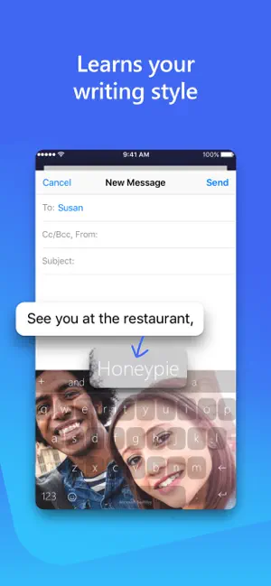

地铁上抄的数据，工位上直接 Ctrl+V 就完事儿
一个普通上班族用 SwiftKey 解决通勤与工位之间数据传递的小故事，顺便把云端剪贴板、表情预测和工具栏自定义这些被低估的功能聊透。
周一早上八点十五分，北京四号线，车厢里挤得像沙丁鱼罐头。我一手吊在扶手杆上，另一只手举着手机，微信对话框里老板的消息刚弹出来——"上周那份行业周报，第三部分的数据你现在方便发我一下吗？"
我咬了咬牙。那份周报是周五晚上加班弄的，数据散在三个不同的 Excel 里，大部分在我的电脑桌面上。但现在我在地铁上，手里只有手机。翻了翻邮箱，还好，周五发出去的周报附件还躺在垃圾箱里没清。我点开下载，用手机版 WPS 找到第三部分，手指长按选中那串数据——两千多个数字，从手机屏幕上一段段复制粘贴到微信里？这恐怕要弄到迟到。
之前试过的方案我都能背出来：发到自己邮箱再去电脑收、用微信文件传输助手、用企业微信的"待办"。每一种都要来回切换 App 好几次，中间还可能因为地铁信号不好卡住。我正准备认命打开邮箱客户端，突然想到上周同事从SwiftKey官网安利过来的一个功能——"SwiftKey 那个跨设备剪贴板你试过吗？手机复制，电脑直接粘贴。"
抱着试试看的心态，我打开了手机上的 SwiftKey App，找到「剪贴板」面板，开了「同步我的剪贴板历史」。它提示需要登录同一个 Microsoft 账号——我工位上那台 Windows 电脑恰好就是用这个账号登的。又在电脑那边打开设置，系统 → 剪贴板 → 把「跨设备同步」打开。前后不到两分钟。
然后我回到手机 WPS，长按选中那两千多个数字，点复制。SwiftKey 工具栏的剪贴板图标闪了一下，最新一条就是我刚复制的内容。我数了三个数——地铁报站器说"即将到达西直门站"——按下车上的 Win+V。
剪贴板历史弹窗里，那串数字安安静静地躺在第一条。我点了一下，它就完整地出现在了微信对话框里。
这不是一个冷门功能，是大部分人没注意到的"隐形捷径"
那段时间我以为这只是 SwiftKey 的一个"彩蛋"。后来跟几个用 iPhone 的朋友聊，有人说"我以为只有跨设备 iCloud 剪贴板才行，但那个对 Windows 没用"；有人说"我从SwiftKey下载装了它就是因为输入法预测准，但剪贴板同步真没开过"。
这也合理。云端剪贴板的价值就在于它不抢风头——不像主题那样看得见摸得着，也不像表情预测那样每次打字都在给你推销。它安安静静躺在设置里，直到你某一次真的需要跨设备传东西，才会突然让你觉得"早知道就早点开了"。
除了剪贴板，我还悄悄做了两件事
那件事之后，我开始认真捣鼓 SwiftKey 的其他功能，还顺手翻了一下SwiftKey文档才发现工具栏原来可以自定义成这样。
首先是工具栏自定义。默认的工具栏图标多而杂，表情、GIF、贴纸、翻译、Copilot、主题、剪贴板……一整排滑过去才能找到我想要的。我进设置里把不需要的都关了——GIF、贴纸、Copilot 统统隐藏，只保留了表情、剪贴板、光标移动和三点菜单。现在打开输入法，最左边就是剪贴板图标，一点就到；表情面板紧跟着，跟老板聊天要加个 😅 也不用切面板。
然后是自定义主题。SwiftKey 有一百多个免费主题，分类从极简到鲜艳、从暗色到动效都有。但我最后选了一张去年夏天在青岛拍的海照片作为背景——把亮度调到 40%，按键透明度调到 20%，既能看清键位，又能在上班打字时偶尔瞥到那片蓝。同事凑过来问"你的键盘怎么这么好看"，我就把生成的自定义主题链接甩过去。
表情预测这件事，我是跟老板吵了一架才发现它的好
话说回来，那个周一之后的第三天，老板又在群里 @ 我："那个数据能不能再拆细一点？"我当时正赶上一个紧急会议，打字飞快，输入"抱歉这段时间比较忙"的时候，SwiftKey 在预测栏里弹了三个表情。第一个是 😅。
我没多想就发了出去。事后才意识到，如果没有那个 😅，那句话读起来像在顶嘴——"抱歉这段时间比较忙"是陈述，"抱歉这段时间比较忙 😅"是带着歉意的解释。 SwiftKey 怎么知道我需要这个表情？
其实它是看了历史选择。我之前几次在"道歉"的语境下选了 😅，它就记住了。这种预测不是"输入关键词 → 弹出固定表情"的硬匹配，而是基于每个人的实际使用记录做的个性化排序——每个人的表情面板长得都不一样。
后来我故意做了个实验：连续五天在"开心"的语境下选 🎉 而不是 😄。第六天输入"周五团建"，预测栏第一个表情就是 🎉。它真的在学。

一个普通上班族的 SwiftKey 日常
现在我的早上是这样的：地铁上刷完新闻，把要整理的参考资料复制进 SwiftKey 剪贴板——三条链接、两段正文、几个关键数字。到工位打开电脑，Win+V 一条一条粘出来，开始整理报告。聊天时表情自动出现在预测栏，偶尔冒出一个恰到好处的 😅 或 🎉。键盘背景是青岛的海，工具栏里只有我常用的四个图标，干净利落。
周末换了个主题，从自定义的海洋换成了官方的暗色极简版——晚上躺床上刷手机时更护眼。登录同一个 Microsoft 账号之后，主题、剪贴板历史、表情学习数据、甚至工具栏的布局，都同步到了我备用的那台 Android 手机上。
这套流程听起来像在写使用手册，但真的，这些功能每单独拎出来一个都不稀奇——跨设备剪贴板、表情预测、主题自定义、工具栏设置——市面上能做其中某一项的输入法很多。但把它们放在一起、而且全部免费、登录同一个账号就全设备同步的，我目前只见过 SwiftKey 一个。
写在最后
那个周一的晚上，我把整理好的数据发给老板。他回了一个"👍"，没有多说什么。但我知道，如果那天我还是沿用"发邮箱 → 电脑收 → 逐段复制"的老路，至少要多花十五分钟，可能还会迟到扣钱。
很多时候效率不是靠什么惊天动地的大工具堆出来的，就是靠这样一个个不起眼的小功能——你知道它在那里，在某个需要它的时刻，它恰好能帮你省掉一点时间。省下来的那十五分钟，可能就是多喝一杯咖啡的时间，或者多刷完一篇文章的时间。